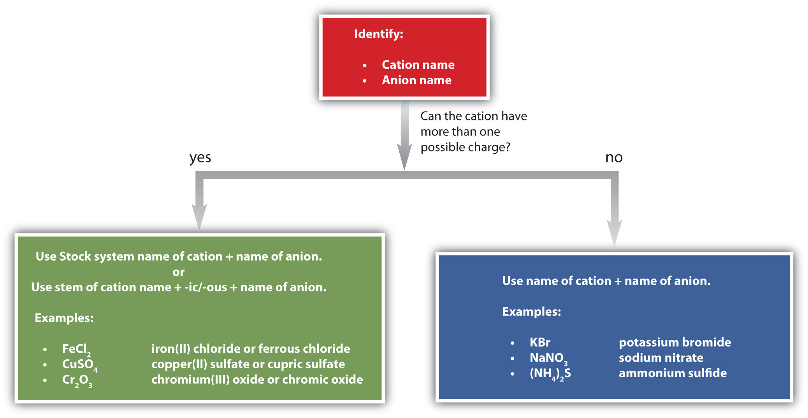

We will see that the word salt has a specific meaning in chemistry, but to most people, this word refers to table salt. This kind of salt is used as a condiment throughout the world, but it was not always so abundant. Two thousand years ago, Roman soldiers received part of their pay as salt, which explains why the words salt and salary come from the same Latin root (salarium). Today, table salt is either mined or obtained from the evaporation of saltwater.
Table salt is sodium chloride (NaCl), which is a simple compound of two elements that are necessary for the human body to function properly. Sodium, for example, is important for nerve conduction and fluid balance. In fact, human blood is about a 0.9% sodium chloride solution, and a solution called normal saline is commonly administered intravenously in hospitals.
Although some salt in our diets is necessary to replenish the sodium and chloride ions that we excrete in urine and sweat, too much is unhealthy, and many people may be ingesting more salt than their bodies need. The RDI of sodium is 2,400 mg—the amount in about 1 teaspoon of salt—but the average intake of sodium in the United States is between 4,000 mg and 5,000 mg, partly because salt is a common additive in many prepared foods. Previously, the high ingestion of salt was thought to be associated with high blood pressure, but current research does not support this link. Even so, some doctors still recommend a low-salt diet (never a “no-salt” diet) for patients with high blood pressure, which may include using a salt substitute. Most salt substitutes use potassium instead of sodium, but some people complain that the potassium imparts a slightly bitter taste.
There are only 118 known chemical elements but tens of millions of known chemical compounds. Compounds can be very complex combinations of atoms, but many important compounds are fairly simple. Table salt, as we have seen, consists of only two elements: sodium and chlorine. Nevertheless, the compound has properties completely different from either elemental sodium (a chemically reactive metal) or elemental chlorine (a poisonous, green gas). We will see additional examples of such differences in this chapter and Chapter 4 "Covalent Bonding and Simple Molecular Compounds", as we consider how atoms combine to form compounds.
Atoms can join together by forming a chemical bondA very strong attraction between two atoms., which is a very strong attraction between two atoms. Chemical bonds are formed when electrons in different atoms interact with each other to make an arrangement that is more stable than when the atoms are apart.
What causes atoms to make a chemical bond with other atoms, rather than remaining as individual atoms? A clue comes by considering the noble gas elements, the rightmost column of the periodic table. These elements—helium, neon, argon, krypton, xenon, and radon—do not form compounds very easily, which suggests that they are especially stable as lone atoms. What else do the noble gas elements have in common? Except for helium, they all have eight valence electrons. Chemists have concluded that atoms are especially stable if they have eight electrons in their outermost shell. This useful rule of thumb is called the octet ruleThe idea that atoms tend to have eight electrons in their valence shell., and it is a key to understanding why compounds form.
Of the noble gases, only krypton, xenon, and radon have been found to make compounds.
There are two ways for an atom that does not have an octet of valence electrons to obtain an octet in its outer shell. One way is the transfer of electrons between two atoms until all atoms have octets. Because some atoms will lose electrons and some atoms will gain electrons, there is no overall change in the number of electrons, but individual atoms acquire a nonzero electric charge. Those that lose electrons become positively charged, and those that gain electrons become negatively charged. Charged atoms are called ionsA charged atom.. Because opposite charges attract (while like charges repel), these oppositely charged ions attract each other, forming ionic bondsAn attraction between oppositely charged ions.. The resulting compounds are called ionic compoundsA compound formed with an ionic bond. and are the primary subject of this chapter.
The second way for an atom to obtain an octet of electrons is by sharing electrons with another atom. These shared electrons simultaneously occupy the outermost shell of more than one atom. The bond made by electron sharing is called a covalent bond. Covalent bonding and covalent compounds will be discussed in Chapter 4 "Covalent Bonding and Simple Molecular Compounds".
Despite our focus on the octet rule, we must remember that for small atoms, such as hydrogen, helium, and lithium, the first shell is, or becomes, the outermost shell and hold only two electrons. Therefore, these atoms satisfy a “duet rule” rather than the octet rule.
A sodium atom has one valence electron. Do you think it is more likely for a sodium atom to lose one electron or gain seven electrons to obtain an octet?
Solution
Although either event is possible, a sodium atom is more likely to lose its single valence electron. When that happens, it becomes an ion with a net positive charge. This can be illustrated as follows:
| Sodium atom | Sodium ion | ||
|---|---|---|---|
| 11 protons | 11+ | 11 protons | 11+ |
| 11 electrons | 11− | 10 electrons | 10− |
| 0 overall charge | +1 overall charge | ||
A fluorine atom has seven valence electrons. Do you think it is more likely for a fluorine atom to lose seven electrons or gain one electron to obtain an octet?
What is the octet rule?
How are ionic bonds formed?
The octet rule is the concept that atoms tend to have eight electrons in their valence electron shell.
Ionic bonds are formed by the attraction between oppositely charged ions.
Why is an ionic compound unlikely to consist of two positively charged ions?
Why is an ionic compound unlikely to consist of two negatively charged ions?
A calcium atom has two valence electrons. Do you think it will lose two electrons or gain six electrons to obtain an octet in its outermost electron shell?
An aluminum atom has three valence electrons. Do you think it will lose three electrons or gain five electrons to obtain an octet in its outermost electron shell?
A selenium atom has six valence electrons. Do you think it will lose six electrons or gain two electrons to obtain an octet in its outermost electron shell?
An iodine atom has seven valence electrons. Do you think it will lose seven electrons or gain one electron to obtain an octet in its outermost electron shell?
Positive charges repel each other, so an ionic compound is not likely between two positively charged ions.
It is more likely to lose two electrons.
It is more likely to gain two electrons.
Most atoms do not have eight electrons in their valence electron shell. Some atoms have only a few electrons in their outer shell, while some atoms lack only one or two electrons to have an octet. In cases where an atom has three or fewer valence electrons, the atom may lose those valence electrons quite easily until what remains is a lower shell that contains an octet. Atoms that lose electrons acquire a positive charge as a result because they are left with fewer negatively charged electrons to balance the positive charges of the protons in the nucleus. Positively charged ions are called cationsA positively charged ion.. Most metals become cations when they make ionic compounds.
Some atoms have nearly eight electrons in their valence shell and can gain additional valence electrons until they have an octet. When these atoms gain electrons, they acquire a negative charge because they now possess more electrons than protons. Negatively charged ions are called anionsA negatively charged ion.. Most nonmetals become anions when they make ionic compounds.
The names for positive and negative ions are pronounced CAT-eye-ons and ANN-eye-ons, respectively.
We can use electron configurations to illustrate the electron transfer process between sodium atoms and chlorine atoms. Recall the electron configuration of sodium from Chapter 2 "Elements, Atoms, and the Periodic Table":
Na: 1s22s22p63s1As demonstrated in Example 1 (in Section 3.1 "Two Types of Bonding"), sodium is likely to achieve an octet in its outermost shell by losing its one valence electron. The remaining species has the following electron configuration:

The cation produced in this way, Na+, is called the sodium ion to distinguish it from the element. The outermost shell of the sodium ion is the second electron shell, which has eight electrons in it. The octet rule has been satisfied. Figure 3.1 "The Formation of a Sodium Ion" is a graphical depiction of this process.
Figure 3.1 The Formation of a Sodium Ion

On the left, a sodium atom has 11 electrons. On the right, the sodium ion only has 10 electrons and a 1+ charge.
A chlorine atom has the following electron configuration:
Cl: 1s22s22p63s23p5Only one more electron is needed to achieve an octet in chlorine’s valence shell. (In table salt, this electron comes from the sodium atom.) The electron configuration of the new species that results is as follows:

In this case, the ion has the same outermost shell as the original atom, but now that shell has eight electrons in it. Once again, the octet rule has been satisfied. The resulting anion, Cl−, is called the chloride ion; note the slight change in the suffix (-ide instead of -ine) to create the name of this anion. Figure 3.2 "The Formation of a Chlorine Ion" is a graphical depiction of this process.
Figure 3.2 The Formation of a Chlorine Ion

On the left, the chlorine atom has 17 electrons. On the right, the chloride ion has 18 electrons and has a 1− charge.
With two oppositely charged ions, there is an electrostatic attraction between them because opposite charges attract. The resulting combination is the compound sodium chloride. Notice that there are no leftover electrons. The number of electrons lost by the sodium atom (one) equals the number of electrons gained by the chlorine atom (one), so the compound is electrically neutral. In macroscopic samples of sodium chloride, there are billions and billions of sodium and chloride ions, although there is always the same number of cations and anions.
In many cases, elements that belong to the same group (vertical column) on the periodic table form ions with the same charge because they have the same number of valence electrons. Thus, the periodic table becomes a tool for remembering the charges on many ions. For example, all ions made from alkali metals, the first column on the periodic table, have a 1+ charge. Ions made from alkaline earth metals, the second group on the periodic table, have a 2+ charge. On the other side of the periodic table, the next-to-last column, the halogens, form ions having a 1− charge. Figure 3.3 "Predicting Ionic Charges" shows how the charge on many ions can be predicted by the location of an element on the periodic table. Note the convention of first writing the number and then the sign on a multiply charged ion. The barium cation is written Ba2+, not Ba+2.
Figure 3.3 Predicting Ionic Charges

The charge that an atom acquires when it becomes an ion is related to the structure of the periodic table. Within a group (family) of elements, atoms form ions of a certain charge.
Chemists use simple diagrams to show an atom’s valence electrons and how they transfer. These diagrams have two advantages over the electron shell diagrams introduced in Chapter 2 "Elements, Atoms, and the Periodic Table". First, they show only valence electrons. Second, instead of having a circle around the chemical symbol to represent the electron shell, they have up to eight dots around the symbol; each dot represents a valence electron. These dots are arranged to the right and left and above and below the symbol, with no more than two dots on a side. For example, the representation for sodium is as follows:

and the representation for chlorine is as follows:

It does not matter what sides the dots are placed on in Lewis diagrams as long as each side has a maximum of two dots.
These diagrams are called Lewis electron dot diagrams, or simply Lewis diagramsA representation that shows valence electrons as dots around the chemical symbol of an atom (also called Lewis electron dot diagrams)., after Gilbert N. Lewis, the American chemist who introduced them. Figure 3.4 "Lewis Diagrams of the Elements Lithium through Neon" shows the electron configurations and Lewis diagrams of the elements lithium through neon, which is the entire second period of the periodic table. For the main group elements, the number of valence electrons is the same as the group number listed at the top of the periodic table.
Figure 3.4 Lewis Diagrams of the Elements Lithium through Neon

The transfer of electrons can be illustrated easily with Lewis diagrams:

In representing the final formula, the dots are omitted.
Starting with lithium and bromine atoms, use Lewis diagrams to show the formation of the ionic compound LiBr.
Solution
From the periodic table, we see that lithium is in the same column as sodium, so it will have the same valence shell electron configuration. That means that the neutral lithium atom will have the same Lewis diagram that the sodium atom has. Similarly, bromine is in the same column as chlorine, so it will have the same Lewis diagram that chlorine has. Therefore,

Starting with magnesium and oxygen atoms, use Lewis diagrams to show the formation of the ionic compound MgO.
Some ionic compounds have different numbers of cations and anions. In those cases, electron transfer occurs between more than one atom. For example, here is the formation of MgBr2:

Most of the elements that make ionic compounds form an ion that has a characteristic charge. For example, sodium makes ionic compounds in which the sodium ion always has a 1+ charge. Chlorine makes ionic compounds in which the chloride ion always has a 1− charge. Some elements, especially transition metals, can form ions of multiple charges. Figure 3.5 "Charges of the Monatomic Ions" shows the characteristic charges for some of these ions. As we saw in Figure 3.1 "The Formation of a Sodium Ion", there is a pattern to the charges on many of the main group ions, but there is no simple pattern for transition metal ions (or for the larger main group elements).
Figure 3.5 Charges of the Monatomic Ions

Note that some atoms commonly form ions of different charges.
What are the two types of ions?
Use Lewis diagrams to illustrate the formation of an ionic compound from a potassium atom and an iodine atom.
When the following atoms become ions, what charges do they acquire?
Cations have positive charges, and anions have negative charges.

Identify each as a cation, an anion, or neither.
Identify each as a cation, an anion, or neither.
Write the electron configuration for each ion.
Write the electron configuration for each ion.
Draw Lewis diagrams for the ions listed in Exercise 3. Also include Lewis diagrams for the respective neutral atoms as a comparison.
Draw Lewis diagrams for the ions listed in Exercise 4. Also include Lewis diagrams for the respective neutral atoms as a comparison.
Using Lewis diagrams, show the electron transfer for the formation of LiF.
Using Lewis diagrams, show the electron transfer for the formation of MgO.
Using Lewis diagrams, show the electron transfer for the formation of Li2O.
Using Lewis diagrams, show the electron transfer for the formation of CaF2.
What characteristic charge do atoms in the first column of the periodic table have when they become ions?
What characteristic charge do atoms in the second column of the periodic table have when they become ions?
What characteristic charge do atoms in the third-to-last column of the periodic table have when they become ions?
What characteristic charge do atoms in the next-to-last column of the periodic table have when they become ions?


1+
2−
We have already encountered some chemical formulas for simple ionic compounds. A chemical formulaA concise list of the elements in a compound and the ratios of these elements. is a concise list of the elements in a compound and the ratios of these elements. To better understand what a chemical formula means, we must consider how an ionic compound is constructed from its ions.
Ionic compounds exist as alternating positive and negative ions in regular, three-dimensional arrays called crystalsA three-dimensional array of alternating positive and negative ions. (Figure 3.6 "A Sodium Chloride Crystal"). As you can see, there are no individual NaCl “particles” in the array; instead, there is a continuous lattice of alternating sodium and chloride ions. However, we can use the ratio of sodium ions to chloride ions, expressed in the lowest possible whole numbers, as a way of describing the compound. In the case of sodium chloride, the ratio of sodium ions to chloride ions, expressed in lowest whole numbers, is 1:1, so we use NaCl (one Na symbol and one Cl symbol) to represent the compound. Thus, NaCl is the chemical formula for sodium chloride, which is a concise way of describing the relative number of different ions in the compound. A macroscopic sample is composed of myriads of NaCl pairs; each pair called a formula unitA set of oppositely charged ions that compose an ionic compound.. Although it is convenient to think that NaCl crystals are composed of individual NaCl units, Figure 3.6 "A Sodium Chloride Crystal" shows that no single ion is exclusively associated with any other single ion. Each ion is surrounded by ions of opposite charge.
Figure 3.6 A Sodium Chloride Crystal

A crystal contains a three-dimensional array of alternating positive and negative ions. The precise pattern depends on the compound. A crystal of sodium chloride, shown here, is a collection of alternating sodium and chlorine ions.
In Section 3.2 "Ions", we encountered LiBr and MgO, which are formulas for other ionic compounds.
The formula for an ionic compound follows several conventions. First, the cation is written before the anion. Because most metals form cations and most nonmetals form anions, formulas typically list the metal first and then the nonmetal. Second, charges are not written in a formula. Remember that in an ionic compound, the component species are ions, not neutral atoms, even though the formula does not contain charges. Finally, the proper formula for an ionic compound always obeys the following rule: the total positive charge must equal the total negative charge. To determine the proper formula of any combination of ions, determine how many of each ion is needed to balance the total positive and negative charges in the compound.
This rule is ultimately based on the fact that matter is, overall, electrically neutral.
By convention, assume that there is only one atom if a subscript is not present. We do not use 1 as a subscript.
If we look at the ionic compound consisting of lithium ions and bromide ions, we see that the lithium ion has a 1+ charge and the bromide ion has a 1− charge. Only one ion of each is needed to balance these charges. The formula for lithium bromide is LiBr.
When an ionic compound is formed from magnesium and oxygen, the magnesium ion has a 2+ charge, and the oxygen atom has a 2− charge. Although both of these ions have higher charges than the ions in lithium bromide, they still balance each other in a one-to-one ratio. Therefore, the proper formula for this ionic compound is MgO.
Now consider the ionic compound formed by magnesium and chlorine. A magnesium ion has a 2+ charge, while a chlorine ion has a 1− charge:
Mg2+ Cl−Combining one ion of each does not completely balance the positive and negative charges. The easiest way to balance these charges is to assume the presence of two chloride ions for each magnesium ion:
Mg2+ Cl− Cl−Now the positive and negative charges are balanced. We could write the chemical formula for this ionic compound as MgClCl, but the convention is to use a numerical subscript when there is more than one ion of a given type—MgCl2. This chemical formula says that there are one magnesium ion and two chloride ions in this formula. (Do not read the “Cl2” part of the formula as a molecule of the diatomic elemental chlorine. Chlorine does not exist as a diatomic element in this compound. Rather, it exists as two individual chloride ions.) By convention, the lowest whole number ratio is used in the formulas of ionic compounds. The formula Mg2Cl4 has balanced charges with the ions in a 1:2 ratio, but it is not the lowest whole number ratio.
By convention, the lowest whole-number ratio of the ions is used in ionic formulas. There are exceptions for certain ions, such as Hg22+.
Write the chemical formula for an ionic compound composed of each pair of ions.
Solution
Write the chemical formula for an ionic compound composed of each pair of ions.
the calcium ion and the oxygen ion
the 2+ copper ion and the sulfur ion
the 1+ copper ion and the sulfur ion
Some ions consist of groups of atoms bonded together and have an overall electric charge. Because these ions contain more than one atom, they are called polyatomic ionsAn ion with more than one atom.. Polyatomic ions have characteristic formulas, names, and charges that should be memorized. For example, NO3− is the nitrate ion; it has one nitrogen atom and three oxygen atoms and an overall 1− charge. Table 3.1 "Some Polyatomic Ions" lists the most common polyatomic ions.
Table 3.1 Some Polyatomic Ions
| Name | Formula |
|---|---|
| ammonium ion | NH4+ |
| acetate ion | C2H3O2− (also written CH3CO2−) |
| carbonate ion | CO32− |
| chromate ion | CrO42− |
| dichromate ion | Cr2O72− |
| hydrogen carbonate ion (bicarbonate ion) | HCO3− |
| cyanide ion | CN− |
| hydroxide ion | OH− |
| nitrate ion | NO3− |
| nitrite ion | NO2− |
| permanganate ion | MnO4− |
| phosphate ion | PO43− |
| hydrogen phosphate ion | HPO42− |
| dihydrogen phosphate ion | H2PO4− |
| sulfate ion | SO42− |
| hydrogen sulfate ion (bisulfate ion) | HSO4− |
| sulfite ion | SO32− |
The rule for constructing formulas for ionic compounds containing polyatomic ions is the same as for formulas containing monatomic (single-atom) ions: the positive and negative charges must balance. If more than one of a particular polyatomic ion is needed to balance the charge, the entire formula for the polyatomic ion must be enclosed in parentheses, and the numerical subscript is placed outside the parentheses. This is to show that the subscript applies to the entire polyatomic ion. An example is Ba(NO3)2.
Write the chemical formula for an ionic compound composed of each pair of ions.
Solution
Write the chemical formula for an ionic compound composed of each pair of ions.
the magnesium ion and the carbonate ion
the aluminum ion and the acetate ion
There are two ways to recognize ionic compounds. First, compounds between metal and nonmetal elements are usually ionic. For example, CaBr2 contains a metallic element (calcium, a group 2A metal) and a nonmetallic element (bromine, a group 7A nonmetal). Therefore, it is most likely an ionic compound. (In fact, it is ionic.) In contrast, the compound NO2 contains two elements that are both nonmetals (nitrogen, from group 5A, and oxygen, from group 6A). It is not an ionic compound; it belongs to the category of covalent compounds that we will study in Chapter 4 "Covalent Bonding and Simple Molecular Compounds". Also note that this combination of nitrogen and oxygen has no electric charge specified, so it is not the nitrite ion.
Second, if you recognize the formula of a polyatomic ion in a compound, the compound is ionic. For example, if you see the formula Ba(NO3)2, you may recognize the “NO3” part as the nitrate ion, NO3−. (Remember that the convention for writing formulas for ionic compounds is not to include the ionic charge.) This is a clue that the other part of the formula, Ba, is actually the Ba2+ ion, with the 2+ charge balancing the overall 2− charge from the two nitrate ions. Thus, this compound is also ionic.
Identify each compound as ionic or not ionic.
Solution
Identify each compound as ionic or not ionic.
N2O
FeCl3
(NH4)3PO4
SOCl2
Science has long recognized that blood and seawater have similar compositions. After all, both liquids have ionic compounds dissolved in them. The similarity may be more than mere coincidence; many scientists think that the first forms of life on Earth arose in the oceans.
A closer look, however, shows that blood and seawater are quite different. A 0.9% solution of sodium chloride approximates the salt concentration found in blood. In contrast, seawater is principally a 3% sodium chloride solution, over three times the concentration in blood. Here is a comparison of the amounts of ions in blood and seawater:
| Ion | Percent in Seawater | Percent in Blood |
|---|---|---|
| Na+ | 2.36 | 0.322 |
| Cl− | 1.94 | 0.366 |
| Mg2+ | 0.13 | 0.002 |
| SO42− | 0.09 | — |
| K+ | 0.04 | 0.016 |
| Ca2+ | 0.04 | 0.0096 |
| HCO3− | 0.002 | 0.165 |
| HPO42−, H2PO4− | — | 0.01 |
Most ions are more abundant in seawater than they are in blood, with some important exceptions. There are far more hydrogen carbonate ions (HCO3−) in blood than in seawater. This difference is significant because the hydrogen carbonate ion and some related ions have a crucial role in controlling the acid-base properties of blood. (For more information on the acid-base properties of blood, see Chapter 10 "Acids and Bases", Section 10.5 "Buffers".) The amount of hydrogen phosphate ions—HPO42− and H2PO4−—in seawater is very low, but they are present in higher amounts in blood, where they also affect acid-base properties. Another notable difference is that blood does not have significant amounts of the sulfate ion (SO42−), but this ion is present in seawater.
What information is contained in the formula of an ionic compound?
Why do the chemical formulas for some ionic compounds contain subscripts, while others do not?
Write the chemical formula for the ionic compound formed by each pair of ions.
the ratio of each kind of ion in the compound
Sometimes more than one ion is needed to balance the charge on the other ion in an ionic compound.
Write the chemical formula for the ionic compound formed by each pair of ions.
Write the chemical formula for the ionic compound formed by each pair of ions.
Write the chemical formula for the ionic compound formed by each pair of ions.
Write the chemical formula for the ionic compound formed by each pair of ions.
Write the chemical formula for the ionic compound formed by each pair of ions.
Write the chemical formula for the ionic compound formed by each pair of ions.
Write the chemical formula for the ionic compound formed by each pair of ions.
Write the chemical formula for the ionic compound formed by each pair of ions.
For each pair of elements, determine the charge for their ions and write the proper formula for the resulting ionic compound between them.
For each pair of elements, determine the charge for their ions and write the proper formula for the resulting ionic compound between them.
Which compounds would you predict to be ionic?
Which compounds would you predict to be ionic?
After learning a few more details about the names of individual ions, you will be a step away from knowing how to name ionic compounds. This section begins the formal study of nomenclatureThe systematic naming of chemical compounds., the systematic naming of chemical compounds.
The name of a monatomic cation is simply the name of the element followed by the word ion. Thus, Na+ is the sodium ion, Al3+ is the aluminum ion, Ca2+ is the calcium ion, and so forth.
We have seen that some elements lose different numbers of electrons, producing ions of different charges (Figure 3.3 "Predicting Ionic Charges"). Iron, for example, can form two cations, each of which, when combined with the same anion, makes a different compound with unique physical and chemical properties. Thus, we need a different name for each iron ion to distinguish Fe2+ from Fe3+. The same issue arises for other ions with more than one possible charge.
There are two ways to make this distinction. In the simpler, more modern approach, called the Stock systemThe system of indicating a cation’s charge with roman numerals., an ion’s positive charge is indicated by a roman numeral in parentheses after the element name, followed by the word ion. Thus, Fe2+ is called the iron(II) ion, while Fe3+ is called the iron(III) ion. This system is used only for elements that form more than one common positive ion. We do not call the Na+ ion the sodium(I) ion because (I) is unnecessary. Sodium forms only a 1+ ion, so there is no ambiguity about the name sodium ion.
The second system, called the common system, is not conventional but is still prevalent and used in the health sciences. This system recognizes that many metals have two common cations. The common system uses two suffixes (-ic and -ous) that are appended to the stem of the element name. The -ic suffix represents the greater of the two cation charges, and the -ous suffix represents the lower one. In many cases, the stem of the element name comes from the Latin name of the element. Table 3.2 "The Common System of Cation Names" lists the elements that use the common system, along with their respective cation names.
Table 3.2 The Common System of Cation Names
| Element | Stem | Charge | Name |
|---|---|---|---|
| iron | ferr- | 2+ | ferrous ion |
| 3+ | ferric ion | ||
| copper | cupr- | 1+ | cuprous ion |
| 2+ | cupric ion | ||
| tin | stann- | 2+ | stannous ion |
| 4+ | stannic ion | ||
| lead | plumb- | 2+ | plumbous ion |
| 4+ | plumbic ion | ||
| chromium | chrom- | 2+ | chromous ion |
| 3+ | chromic ion | ||
| gold | aur- | 1+ | aurous ion |
| 3+ | auric ion |
The name of a monatomic anion consists of the stem of the element name, the suffix -ide, and then the word ion. Thus, as we have already seen, Cl− is “chlor-” + “-ide ion,” or the chloride ion. Similarly, O2− is the oxide ion, Se2− is the selenide ion, and so forth. Table 3.3 "Some Monatomic Anions" lists the names of some common monatomic ions.
Table 3.3 Some Monatomic Anions
| Ion | Name |
|---|---|
| F− | fluoride ion |
| Cl− | chloride ion |
| Br− | bromide ion |
| I− | iodide ion |
| O2− | oxide ion |
| S2− | sulfide ion |
| P3− | phosphide ion |
| N3− | nitride ion |
The polyatomic ions have their own characteristic names, as we saw in Table 3.1 "Some Polyatomic Ions".
Name each ion.
Solution
Name each ion.
Fe2+
Fe3+
SO42−
Ba2+
HCO3−
Write the formula for each ion.
Solution
Write the formula for each ion.
the fluoride ion
the carbonate ion
the stannous ion
the potassium ion
Now that we know how to name ions, we are ready to name ionic compounds. We do so by placing the name of the cation first, followed by the name of the anion, and dropping the word ion from both parts.
For example, what is the name of the compound whose formula is Ba(NO3)2?
The compound’s name does not indicate that there are two nitrate ions for every barium ion. You must determine the relative numbers of ions by balancing the positive and negative charges.
If you are given a formula for an ionic compound whose cation can have more than one possible charge, you must first determine the charge on the cation before identifying its correct name. For example, consider FeCl2 and FeCl3. In the first compound, the iron ion has a 2+ charge because there are two Cl− ions in the formula (1− charge on each chloride ion). In the second compound, the iron ion has a 3+ charge, as indicated by the three Cl− ions in the formula. These are two different compounds that need two different names. By the Stock system, the names are iron(II) chloride and iron(III) chloride. If we were to use the stems and suffixes of the common system, the names would be ferrous chloride and ferric chloride, respectively.
Name each ionic compound, using both Stock and common systems if necessary.
Solution
Name each ionic compound, using both Stock and common systems if necessary.
ZnBr2
Fe(NO3)3
Al2O3
AuF3
AgF
Figure 3.7 "A Guide to Naming Simple Ionic Compounds" is a synopsis of how to name simple ionic compounds.
Figure 3.7 A Guide to Naming Simple Ionic Compounds
Follow these steps to name a simple ionic compound.
Briefly describe the process for naming an ionic compound.
In what order do the names of ions appear in the names of ionic compounds?
Which ionic compounds can be named using two different systems? Give an example.
Name the cation and then the anion but don’t use numerical prefixes.
the cation name followed by the anion name
Ionic compounds in which the cation can have more than one possible charge have two naming systems. FeCl3 is either iron(III) chloride or ferric chloride (answers will vary).
Name each ion.
Name each ion.
Name the ionic compound formed by each pair of ions.
Name the ionic compound formed by each pair of ions.
Name the ionic compound formed by each pair of ions.
Name the ionic compound formed by each pair of ions.
Name the ionic compound formed by each pair of ions. Use both the Stock and common systems, where appropriate.
Name the ionic compound formed by each pair of ions. Use both the Stock and common systems, where appropriate.
Name the ionic compound formed by each pair of ions. Use both the Stock and common systems, where appropriate.
Name the ionic compound formed by each pair of ions. Use both the Stock and common systems, where appropriate.
Give two names for each compound.
Give two names for each compound.
One skill needed in future chapters is the ability to determine the mass of the formula of an ionic compound. This quantity is called the formula massThe sum of the masses of the elements in the formula of an ionic compound.. The formula mass is obtained by adding the masses of each individual atom in the formula of the compound. Because a proper formula is electrically neutral (with no net electrons gained or lost), the ions can be considered atoms for the purpose of calculating the formula mass.
Let us start by calculating the formula mass of sodium chloride (NaCl). This formula mass is the sum of the atomic masses of one sodium atom and one chlorine atom, which we find from the periodic table; here, we use the masses to two decimal places:
| Na: | 22.99 u |
| Cl: | + 35.45 u |
| Total: | 58.44 u |
To two decimal places, the formula mass of NaCl is 58.44 u.
When an ionic compound has more than one anion or cation, you must remember to use the proper multiple of the atomic mass for the element in question. For the formula mass of calcium fluoride (CaF2), we must multiply the mass of the fluorine atom by 2 to account for the two fluorine atoms in the chemical formula:
| Ca: | 1 × 40.08 | 40.08 u |
| F: | 2 × 19.00 = | + 38.00 u |
| Total: | 78.08 u |
The formula mass of CaF2 is 78.08 u.
For ionic compounds with polyatomic ions, the sum must include the number and mass of each atom in the formula for the polyatomic ion. For example, potassium nitrate (KNO3) has one potassium atom, one nitrogen atom, and three oxygen atoms:
| K: | 1 × 39.10 | 39.10 u |
| N: | 1 × 14.00 | + 14.00 u |
| O: | 3 × 16.00 = | + 48.00 u |
| Total: | 101.10 u |
The formula mass of KNO3 is 101.10 u.
Potassium nitrate is a key ingredient in gunpowder and has been used clinically as a diuretic.
When a formula contains more than one polyatomic unit in the chemical formula, as in Ca(NO3)2, don’t forget to multiply the atomic mass of every atom inside the parentheses by the subscript outside the parentheses. This is necessary because the subscript refers to the entire polyatomic ion. Thus, for Ca(NO3)2, the subscript 2 implies two complete nitrate ions, so we must sum the masses of two (1 × 2) nitrogen atoms and six (3 × 2) oxygen atoms, along with the mass of a single calcium atom:
| Ca: | 1 × 40.08 | 40.08 u |
| N: | 2 × 14.00 = | + 28.00 u |
| O: | 6 × 16.00 = | + 96.00 u |
| Total: | 164.08 u |
The key to calculating the formula mass of an ionic compound is to correctly count each atom in the formula and multiply the atomic masses of its atoms accordingly.
Use the atomic masses (rounded to two decimal places) from the inside cover of this book to determine the formula mass for each ionic compound.
Solution
| Fe: | 55.85 u | |
| Cl: | 3 × 35.45 = | + 106.35 u |
| Total: | 162.20 u |
The formula mass of FeCl3 is 162.20 u.
When we distribute the subscript 3 through the parentheses containing the formula for the ammonium ion, we see that we have 3 nitrogen atoms and 12 hydrogen atoms. Thus, we set up the sum as follows:
| N: | 3 × 14.00 = | 42.00 u |
| H: | 12 × 1.00 = | + 12.00 u |
| P: | + 30.97 u | |
| O: | 4 × 16.00 = | + 64.00 u |
| Total: | 148.97 u |
The formula mass for (NH4)3PO4 is 148.97 u.
Use the atomic masses (rounded to two decimal places) from the inside cover of this book to determine the formula mass for each ionic compound.
TiO2
AgBr
Au(NO3)3
Fe3(PO4)2
Some ionic compounds have water (H2O) incorporated within their formula unit. These compounds, called hydrates, have a characteristic number of water units associated with each formula unit of the compound. Hydrates are solids, not liquids or solutions, despite the water they contain.
To write the chemical formula of a hydrate, write the number of water units per formula unit of compound after its chemical formula. The two chemical formulas are separated by a vertically centered dot. The hydrate of copper(II) sulfate has five water units associated with each formula unit, so it is written as CuSO4·5H2O. The name of this compound is copper(II) sulfate pentahydrate, with the penta- prefix indicating the presence of five water units per formula unit of copper(II) sulfate.
Hydrates have various uses in the health industry. Calcium sulfate hemihydrate (CaSO4·½H2O), known as plaster of Paris, is used to make casts for broken bones. Epsom salt (MgSO4·7H2O) is used as a bathing salt and a laxative. Aluminum chloride hexahydrate is an active ingredient in antiperspirants. The accompanying table lists some useful hydrates.
Table 3.4 Names and Formulas of Some Widely Used Hydrates
| Formula | Name | Uses |
|---|---|---|
| AlCl3·6H2O | aluminum chloride hexahydrate | antiperspirant |
| CaSO4·½H2O | calcium sulfate hemihydrate (plaster of Paris) | casts (for broken bones and castings) |
| CaSO4·2H2O | calcium sulfate dihydrate (gypsum) | drywall component |
| CoCl2·6H2O | cobalt(II) chloride hexahydrate | drying agent, humidity indicator |
| CuSO4·5H2O | copper(II) sulfate pentahydrate | fungicide, algicide, herbicide |
| MgSO4·7H2O | magnesium sulfate heptahydrate (Epsom salts) | laxative, bathing salt |
| Na2CO3·10H2O | sodium carbonate decahydrate (washing soda) | laundry additive/cleaner |
What is the relationship between atomic mass and formula mass?
How are subscripts used to determine a formula mass when more than one polyatomic ion is present in a chemical formula?
The formula mass is the sum of the atomic masses of the atoms in the formula.
The subscript is distributed throughout the parentheses to determine the total number of atoms in the formula.
What is the formula mass for the ionic compound formed by each pair of ions?
What is the formula mass for the ionic compound formed by each pair of ions?
What is the formula mass for the ionic compound formed by each pair of ions?
What is the formula mass for the ionic compound formed by each pair of ions?
What is the formula mass for each compound?
What is the formula mass for each compound?
What is the formula mass for each compound?
What is the formula mass for each compound?
What is the formula mass for each compound?
What is the formula mass for each compound?
To ensure that you understand the material in this chapter, you should review the meanings of the following bold terms and ask yourself how they relate to the topics in the chapter.
Atoms combine into compounds by forming chemical bonds. A survey of stable atoms and molecules leads to the octet rule, which says that stable atoms tend to have eight electrons in their outermost, or valence, shell. One way atoms obtain eight electrons in the valence shell is for some atoms to lose electrons while other atoms gain them. When this happens, the atoms take on an electrical charge. Charged atoms are called ions. Ions having opposite charges attract each other. This attraction is called ionic bonding, and the compounds formed are called ionic compounds.
Positively charged ions are called cations, while negatively charged ions are called anions. The formation of both cations and anions can be illustrated using electron configurations. Because elements in a column of the periodic table have the same valence shell electron configuration, atoms in the same column of the periodic table tend to form ions having the same charge. Electron dot diagrams, or Lewis diagrams, can also be used to illustrate the formation of cations and anions.
Ionic compounds are represented in writing by a chemical formula, which gives the lowest ratio of cations and anions present in the compound. In a formula, the symbol of the cation is written first, followed by the symbol of the anion. Formula unit is considered the basic unit of an ionic compound because ionic compounds do not exist as discrete units. Instead, they exist as crystals, three-dimensional arrays of ions, with cations surrounded by anions and anions surrounded by cations. Chemical formulas for ionic compounds are determined by balancing the positive charge from the cation(s) with the negative charge from the anion(s). A subscript to the right of the ion indicates that more than one of that ion is present in the chemical formula.
Some ions are groups of atoms bonded together and having an overall electrical charge. These are called polyatomic ions. Writing formulas with polyatomic ions follows the same rules as with monatomic ions, except that when more than one polyatomic ion is present in a chemical formula, the polyatomic ion is enclosed in parentheses and the subscript is outside the right parenthesis. Ionic compounds typically form between metals and nonmetals or between polyatomic ions.
Names of ionic compounds are derived from the names of the ions, with the name of the cation coming first, followed by the name of the anion. If an element can form cations of different charges, there are two alternate systems for indicating the compound’s name. In the Stock system, a roman numeral in parentheses indicates the charge on the cation. An example is the name for FeCl2, which is iron(II) chloride. In the common system, the suffixes -ous and -ic are used to stand for the lower and higher possible charge of the cation, respectively. These suffixes are attached to a stem representing the element (which frequently comes from the Latin form of the element name). An example is the common name for FeCl2, which is ferrous chloride.
The formula mass of an ionic compound is the sum of the masses of each individual atom in the formula. Care must be taken when calculating formula masses for formulas containing multiple polyatomic ions because the subscript outside the parentheses refers to all the atoms in the polyatomic ion.
What number shell is the valence electron shell of a sodium atom? What number shell is the valence shell of a sodium ion? Explain the difference.
What number shell is the valence electron shell of a bromine atom? What number shell is the valence shell of a bromide ion? Explain the difference between these answers and the answers to Exercise 1.
What is the electron configuration of each ion?
What is the electron configuration of each ion?
Use Lewis diagrams and arrows to show the electron transfer that occurs during the formation of an ionic compound among Mg atoms and F atoms. (Hint: how many atoms of each will you need?)
Use Lewis diagrams and arrows to show the electron transfer that occurs during the formation of an ionic compound among K atoms and O atoms. (Hint: how many atoms of each will you need?)
Mercury forms two possible cations—Hg2+ and Hg22+, the second of which is actually a two-atom cation with a 2+ charge.
The uranyl ion (UO22+) is a common water-soluble form of uranium. What is the chemical formula of the ionic compound uranyl nitrate? What is the chemical formula of the ionic compound uranyl phosphate?
The formal chemical name of the mineral strengite is iron(III) phosphate dihydrate. What is the chemical formula of strengite? What is the formula mass of strengite?
What is the formula mass of MgSO4·7H2O?
What is the formula mass of CaSO4·½H2O?
What mass does 20 formula units of NaCl have?
What mass does 75 formula units of K2SO4 have?
If an atomic mass unit equals 1.66 × 10−24 g, what is the mass in grams of one formula unit of NaCl?
If an atomic mass unit equals 1.66 × 10−24 g, what is the mass in grams of 5.00 × 1022 formula units of NaOH?
If an atomic mass unit equals 1.66 × 10−24 g, what is the mass in grams of 3.96 × 1023 formula units of (NH4)2SO4?
Both tin and lead acquire 2+ or 4+ charges when they become ions. Use the periodic table to explain why this should not surprise you.
Which ion would you expect to be larger in size—In3+ or Tl3+? Explain.
Which ion would you expect to be smaller in size—I− or Br−? Explain.
Which ion with a 2+ charge has the following electron configuration? 1s22s22p6
Which ion with a 3− charge has the following electron configuration? 1s22s22p6
For sodium, the valence shell is the third shell; for the sodium ion, the valence shell is the second shell because it has lost all its third shell electrons.
FePO4·2H2O; 186.86 u
145.16 u
13,070.25 u
3.32 g
Both tin and lead have two p electrons and two s electrons in their valence shells.
Br− because it is higher up on the periodic table
N3−